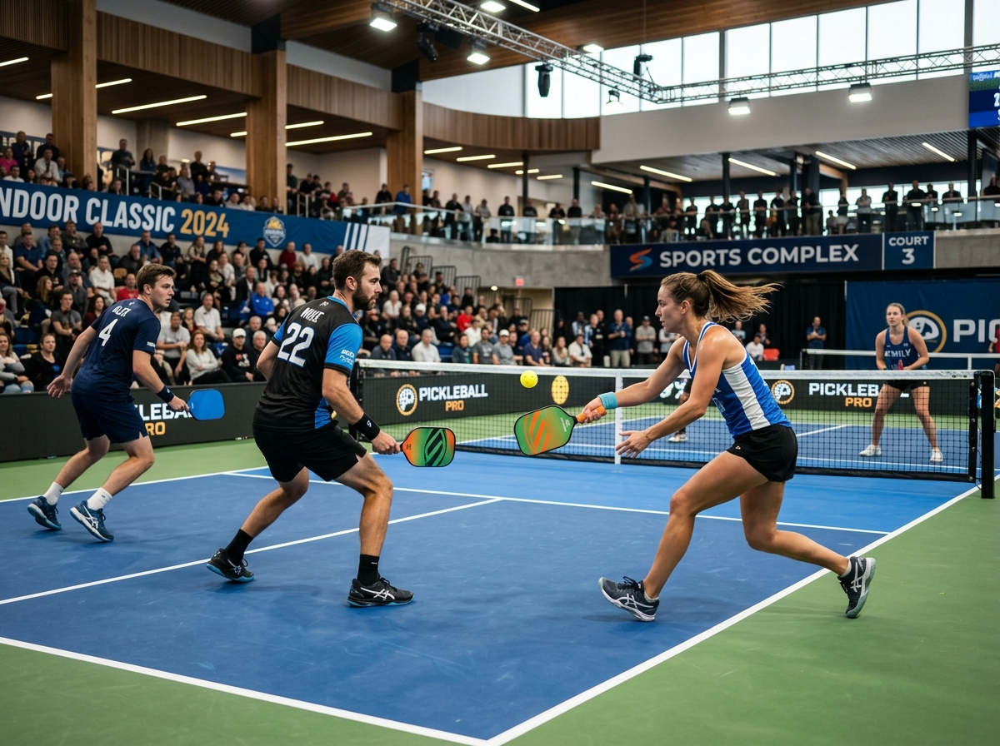
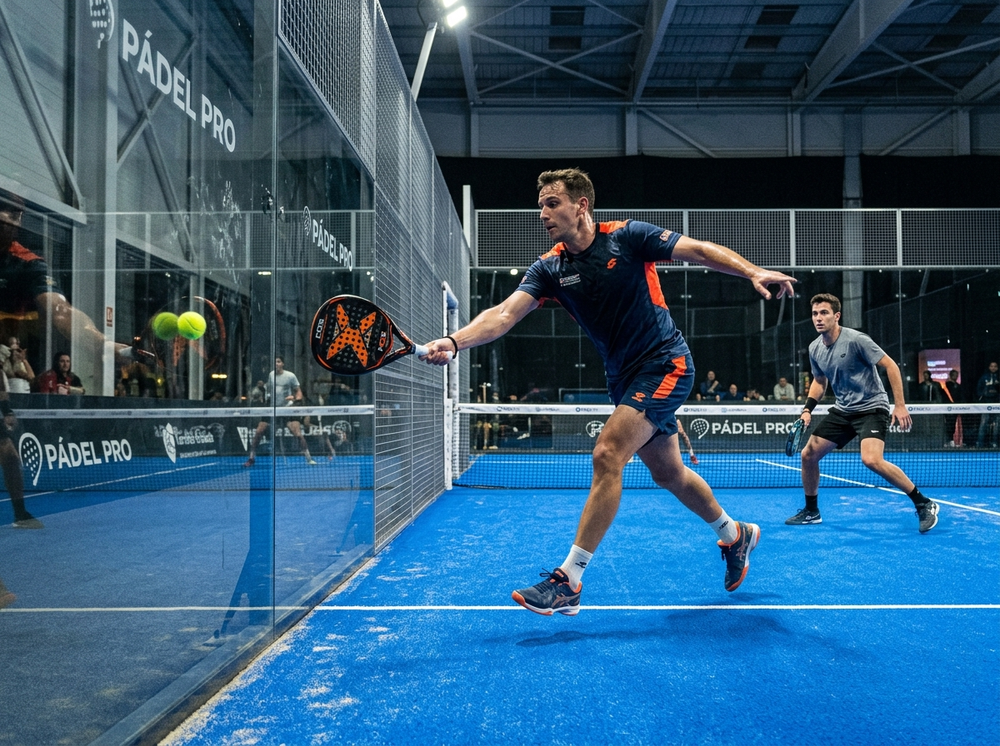
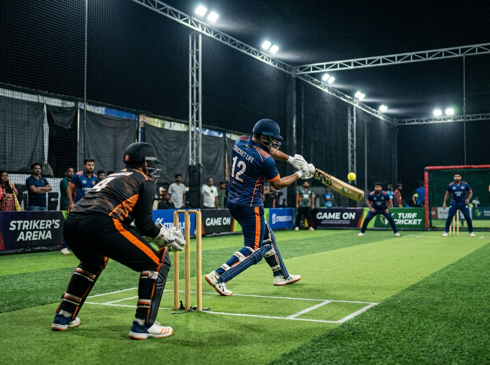

Pickleball, Paddle Ball & Box Cricket
One unified portal managing sport-specific capacity, court availability, and player rotations. Review rules, capacity models, and equipment for each discipline.

Pickleball
Combining elements of tennis, badminton, and ping-pong, Pickleball is the fastest growing sport in community athletics. Played on a badminton-sized court with a lower net and perforated plastic balls, each 30-minute slot delivers intense, accessible doubles rallies.
Key Rules & Format:
- Doubles Rotation: 4 players share a court per 30-minute slot.
- The Non-Volley Zone (Kitchen): Players cannot volley the ball while standing in the 7-foot kitchen zone.
- Two-Bounce Rule: The serve must bounce, and the receiver's return must bounce before volleys are allowed.
- Underhand Serve: Serves are struck below waist height diagonally cross-court.
Paddle Ball (Pádel)
Pádel is played inside an enclosed glass and metallic mesh arena roughly one-third the size of a tennis court. The surrounding glass walls are active in play, allowing thrilling wall rebounds, strategic positioning, and dynamic fast-paced community play.
Key Rules & Format:
- Glass Rebounds: After the ball bounces once on the turf, it may rebound off the glass walls before being struck.
- Underhand Serve: Serves must be struck waist-high after a preliminary floor bounce.
- Standard Scoring: Sets and games scored identically to traditional tennis.
- Equipment: Solid stringless racquets with micro-perforations for aerodynamic control.


Box Cricket
Box Cricket brings the excitement of India’s favourite sport into a high-speed, padded turf arena. Designed with continuous overhead and boundary nets, the ball remains constantly in play. Players register individually and are drafted into balanced 6v6 or 8v8 teams by match organizers.
Key Rules & Format:
- Continuous Play: Boundary netting keeps the game moving with minimal dead-ball stoppages.
- Mandatory Bowling: Every squad member bowls at least one over, ensuring total community participation.
- Net Hits: Direct hits on the roof or side nets have specific run or dismissal values according to ground rules.
- Balanced Squads: Organisers review players' self-assessed skill levels to build fun, competitive matches.
10 Courts × 3 Hours = 60 Court-Slots
How court-slots translate to player appearances across the 3-hour evening window (7:00 PM to 10:00 PM).
| Sport Discipline | Courts Available | Slots per Court | Total Court-Slots | Players per Slot | Max Player Appearances | Booking Model |
|---|---|---|---|---|---|---|
| Pickleball | 10 Courts | 6 (30 min each) | 60 Units | 4 Players (Doubles) | Up to 240 | Individual Spot (1 of 4) |
| Paddle Ball | 4 Courts | 6 (30 min each) | 24 Units | 4 Players (Doubles) | Up to 96 | Individual Spot (1 of 4) |
| Box Cricket | 2 Arenas | 3 or 6 Matches | 6 to 12 Units | 14 Players / Game | Up to 84 | Player Pool / Squad Draft |
Important Capacity Note (From Project Framework, Page 5):
"240 is not the number of separate time slots. It is the potential player-place count under a four-player shared-court model." Each 30-minute interval on each court represents an independent capacity unit where 4 players share the playing surface.